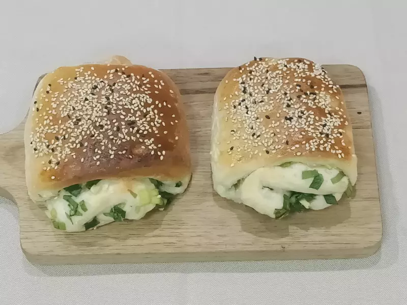
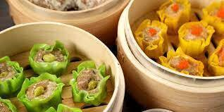

|  |  | |
|
| 燒餅 | 燒賣 | 腸粉 | 心得 |
把雞蛋牛奶分數次慢慢倒入麵粉中，一邊倒一邊攪拌，接著加沙拉油揉成光滑的麵糰，蓋上保鮮膜或濕布鬆弛15分鐘，再整揉，重複此動作2～3次。
揉好的麵糰按壓整形成長塊狀，麵糰上刷一層食用油，蓋上保鮮膜並放入冰箱冷藏約8小時左右。
將擀薄的麵糰切成2～3厘米寬的小段狀，然後把各小段兩兩疊在一起，用筷子在中間用力壓一下。
鍋中加7分滿油，熱油大概190度時放入油條麵糰，然後用筷子不停地翻動油條。
把油條炸至表面金黃撈出瀝油即完成。

由於當時秦檜殺害抗金將領岳飛
一位叫王小二的夥計非常憤慨
把兩塊樣子不同的麵餅背靠背粘著並放在滾油鍋裏炸
邊炸邊大叫：「大家快看『油炸檜』啦！」